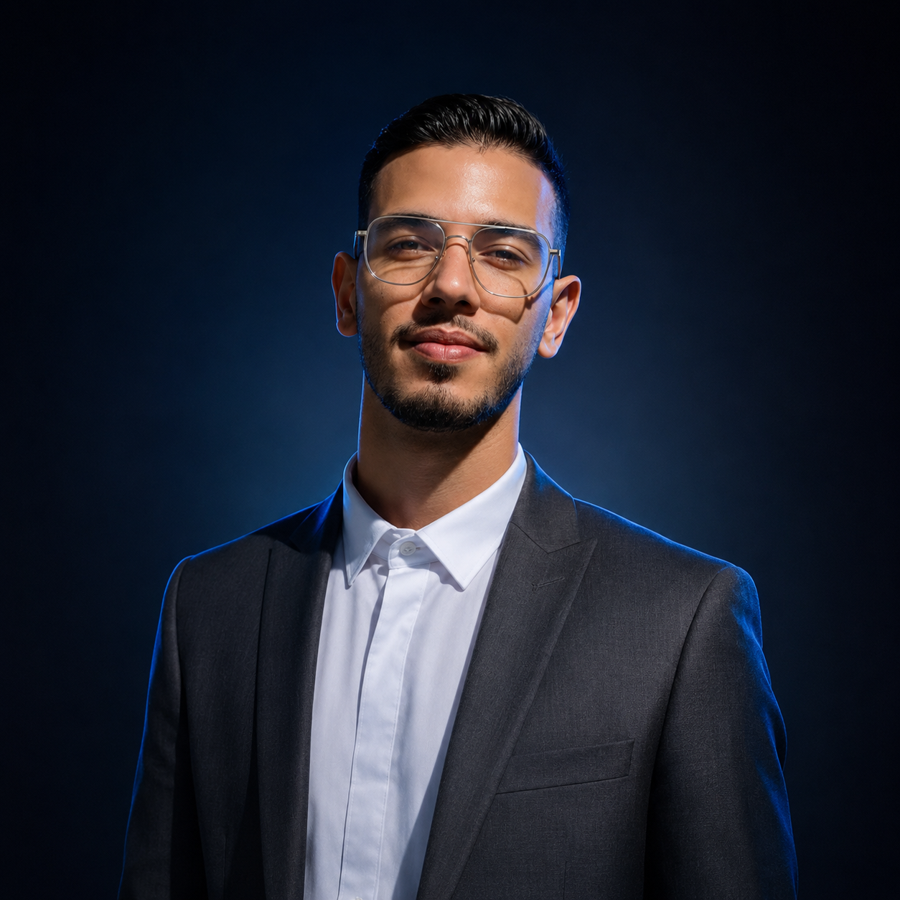
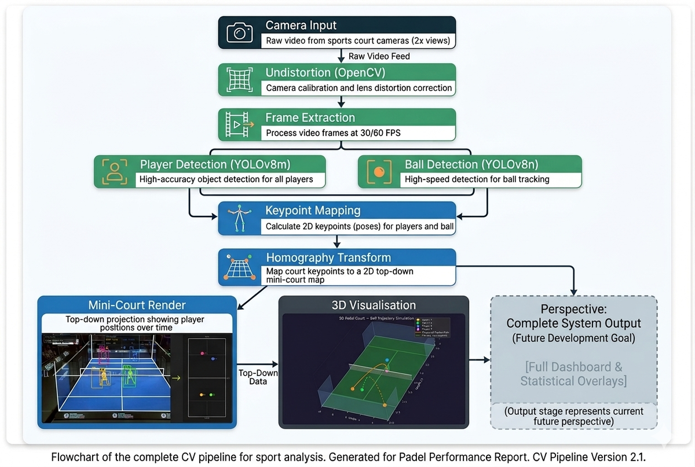
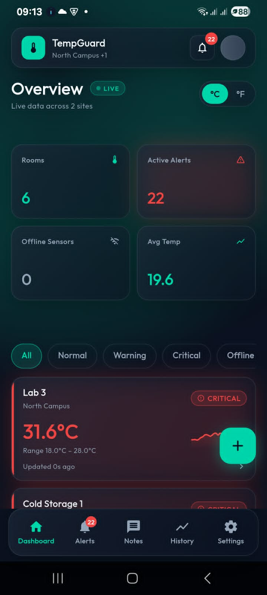

I design and build production-grade software where AI meets great product engineering. From real-time computer vision pipelines to polished web and mobile experiences, my work sits at the intersection of research and craft.
Software Engineering student (Licence, final year) — ISIGK, specializing in Deep Learning & Computer Vision.
Turn hard AI problems into products people love using.
Clarity, craft, honesty. Ship things worth defending.
Player & ball detection accuracy on real match footage
Frames per second — real-time pipeline performance
Faster than baseline approach with optimized inference
Trajectory reconstruction from dual-view court cameras
Automated highlight generation with cinematic zoom
Shipped production apps — CV platform & IoT mobile
Computer Vision & AI — built as part of a 2-person engineering team
Transforms raw Padel match footage into professional broadcast-style analysis with 3D trajectory reconstruction and VAR-ready highlight generation.


IoT temperature monitoring mobile app with real-time alerts, live dashboards, and historical charts. Built with Flutter + Supabase.
LLM-powered coaching using MediaPipe pose + Llama 3 for biomechanical feedback on Padel technique.
Hand detection with action triggers, face recognition, expression analysis, and ML prediction games.
Shipped end-to-end CV system — 94% accuracy, 60+ FPS.
LLM-powered coaching and automated highlight engine.
IoT temperature monitoring mobile app with Flutter.
4-month internship at ULTIMA ICD building AI-powered applications.